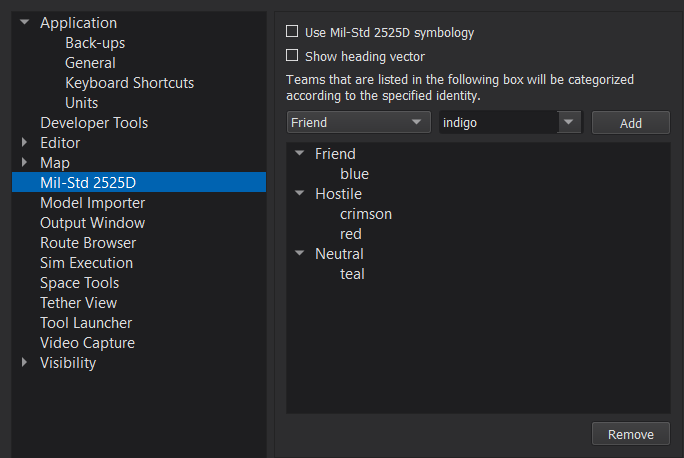
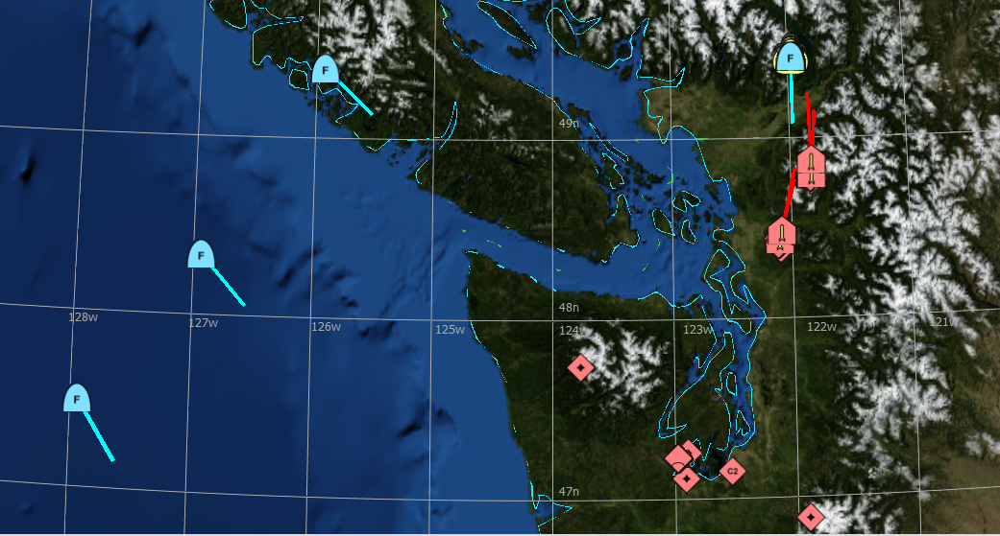

Preferences - Mil-Std 2525D Symbology¶
The Mil-Std 2525D Symbology preferences provide an alternative way of viewing platforms and tracks on the map display. The “Use Symbology” checkbox controls whether the normally displayed models will be replaced with Mil-Std symbols. These symbols are aligned with the display.
The “Show Velocity Vector” option is an additional setting that is shown on the map when Mil-Std symbology is being used. These vectors act as a graphic amplifier for platforms that depict their direction of movement in the color associated with their standard identity (Friend = cyan, Hostile = red, Neutral = green, Unknown = yellow).
Teams are assigned to individual identities via the provided tree-view. By default, the blue team is assigned to “Friendly” and the red team is assigned to “Hostile”, but teams can be added/removed from the tree-view as necessary. For simplicity, it is also possible to drag existing team assignments between the different sections. Any team not assigned to an identity is assumed to be “Unknown.”
Note
Mil-Std 2525D preferences are shared among all AFSIM visual applications.
Mil-Std 2525D Icons¶
In this context, icons refer to the innermost part of the displayed symbol and provide a pictorial or alphanumeric representation of what the platform or track is. Similar to how model names and definitions work for platforms, icon mappings can be modified or added via an external file.
To add custom mappings or re-map existing ones, add the directory “your_install_directory/resources/site” to the AFSIM installation. Inside of the site directory, create a milStdIconMappings.csv file as well as an additional “mil-std2525d” directory. The .csv file should have two columns: the first column is an icon name, while the second column is the 20-digit Mil-Std code that describes the symbol that will be shown. The mil-std2525d directory is where the additional images will be stored. Make sure that these have names that correspond to the 20-digit codes written in the .csv file (e.g. “10030100001101040000.png”).
The mil-std2525d icons included with the AFSIM release were created using the Unit Symbol Generate tool located at https://www.spatialillusions.com/.
Note
When modifying the milStdIconMappings.csv, make sure the icon codes are exactly 20 digits otherwise the input will be interpreted as invalid. In particular, Excel may automatically truncate leading 0s off of an entry, producing invalid input.
Symbology On the Map Display¶
When replacing platform models with Mil-Std symbology, the platform will be displayed with the assumption of complete knowledge. This means that regardless of team, identity or intended availability of information, the complete symbol will be shown as long as a supported 20-digit code is provided.
When replacing tracks, parts of the symbol are included or omitted based on the information reported by the track. For instance, if the platform’s type is not reported but all other relevant information is, the icon will be omitted but factors such as spatial domain and side will still affect the symbol set and standard identity used in the display.
Note
For non white-cell scenarios, it may be better to hide hostile teams via the Team Visibility preferences and rely on track information. This will prevent Mil-Std symbology from being displayed twice (one for the platform, and one for the track).